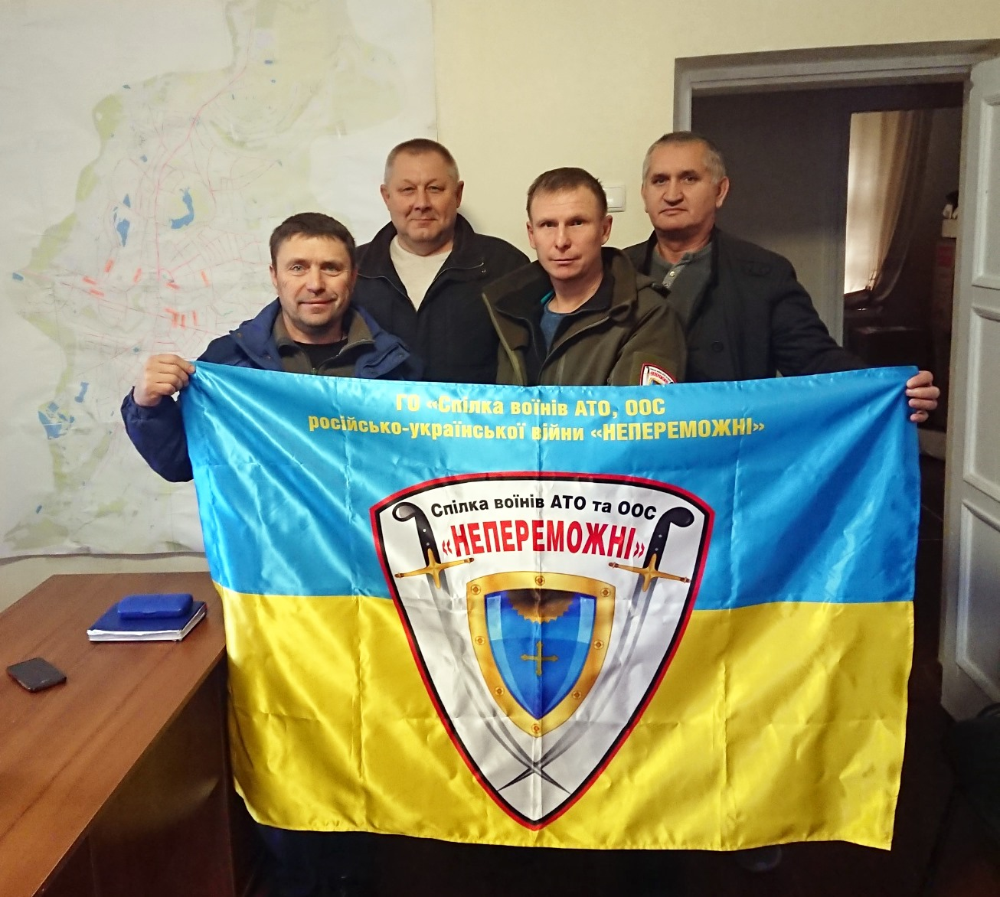
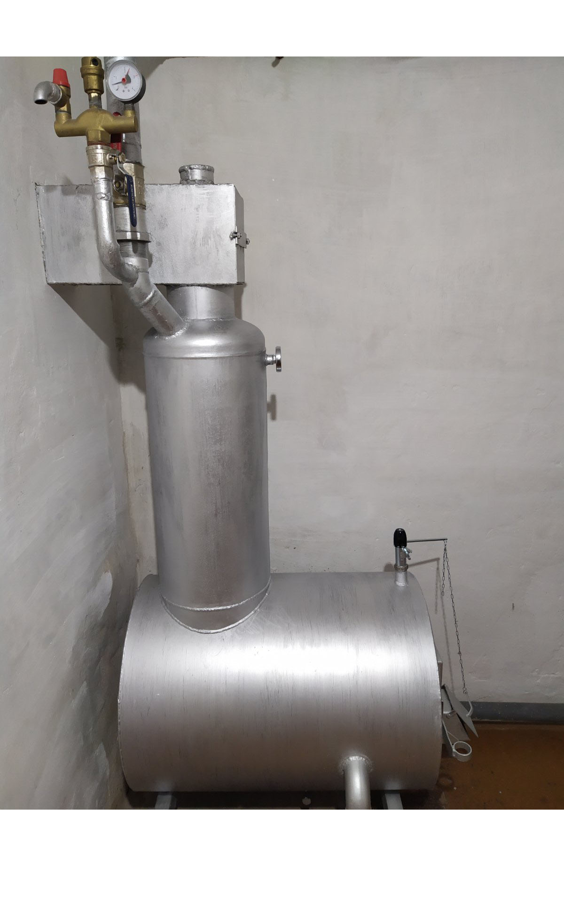
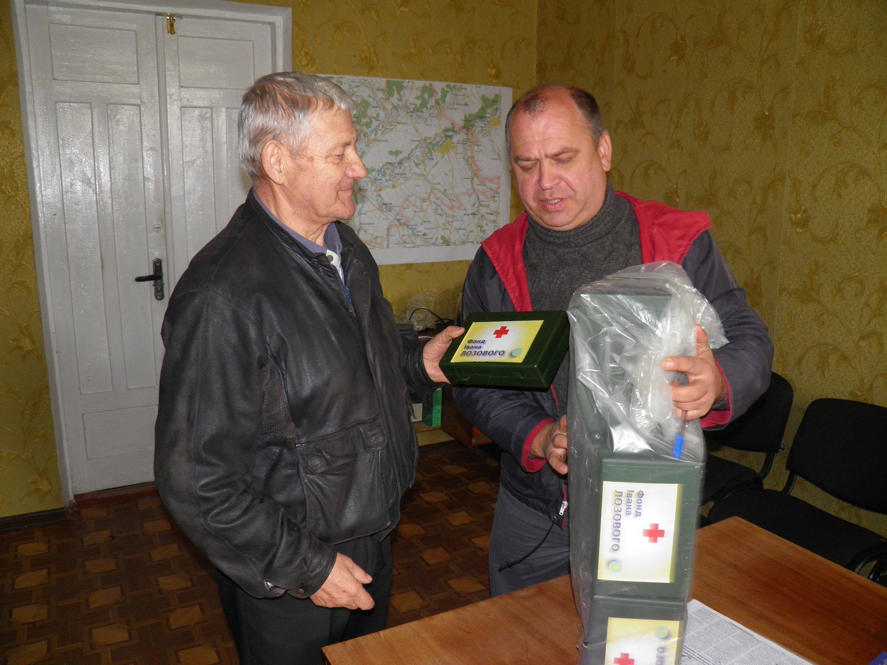
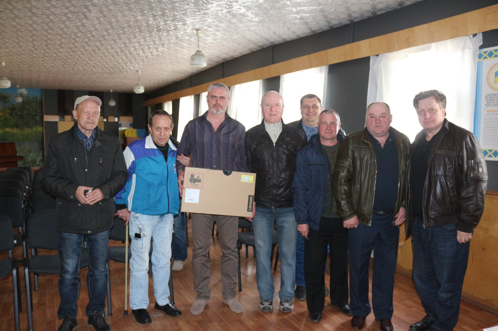
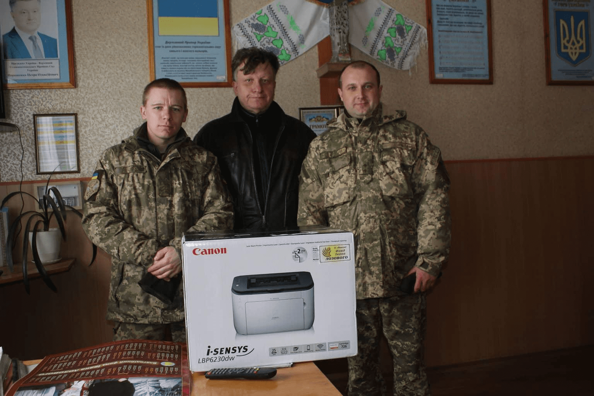

Military:

November 9, 2020 - Okhtyrka Association of Veterans of of the Russian-Ukrainian war “Unstoppable”. Gifts from the Lozowy Fund: Flags and chevrons for members.

May 18, 2020 - Lebedyn City Joint Military Commissariat. Gift from the Lozowy Fund: New boiler.

October 31, 2019 - Velyka Pysarivka Organization of Veterans of the Anti-terrorist Operation. Gifts from the Lozowy Fund: First aid kits.

April 18, 2019 - Meeting with veterans of the Ministry of Internal Affairs NGO in Lebedyn. Gift from the Lozowy Fund: Computer laptop.

December 27, 2018 - Military unit A1322 in Okhtyrka. Gifts from the Lozowy Fund: Christmas gifts (68 pcs), Computer printer.